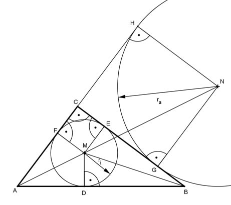

Pythagoras Aufgabe 66 Berechnen Sie den Inkreisradius ri und den Ankreisradius ra eines rechtwinkligen Dreiecks in cm, wenn die Katheten a = 8 cm und b = 6 cm.  MF = FC = ri NH = CH = ra AF = AC – FC = AC – ri AH = AC + CH = AC + ra NH || MF Strahlensatz: (Betrachtet werden sie Strahlen AH und AJ) NH : MF = AH : AF ra : ri = (AC + ra) : (AC - ri) (1) Satz von Pythagoras im Dreieck ABC: AB² = BC² + AC² AB² = 8² cm² + 6² cm² = 100 cm² |√ c = 10 cm M liegt auf dem Schnittpunkt der Winkelhalbierenden im Dreieck ABC. Deswegen sind die Dreiecke ADM und AMF kongruent, deswegen ist AD = AF = AC - ri Die Dreiecke BDM und BME sind kongruent, deswegen ist BD = BE = BC - ri c = AD + DB c = (AC – ri) + (BC – ri) 10 = (6 - ri) + (8 - ri) 10 = 14 - 2ri |+ 2ri 2ri + 10 = 14 | -10 2ri = 4 | :2 ri = 2 cm Eingesetzt in (1) ra : 2 = (6 + ra) : (6 - 2) Inneres Produkt = äußeres Produkt 4 * ra = 2 * (6 + ra) 4ra = 12 + 2ra |-2ra 2ra = 12 | :2 ra = 6 cm